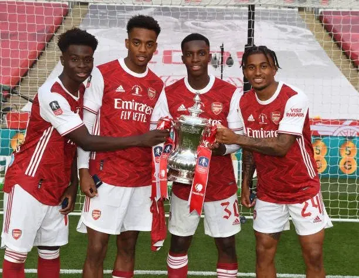
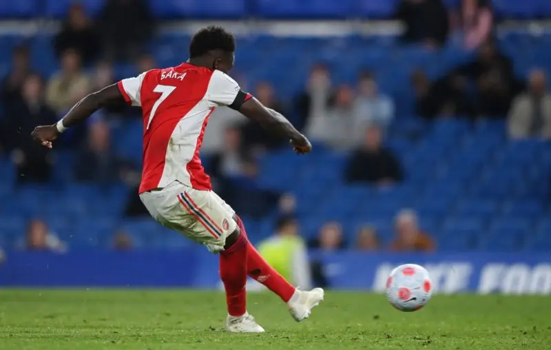

Arsenal · Hale End
The stones
beneath.
Không phải ai đặt viên đá đầu tiên cũng được đứng trong ngôi nhà vào ngày nó hoàn thành, nhưng ở đâu đó dưới phần móng, vẫn có những viên đá mang tên họ.

Người ta dùng khái niệm “cathedral thinking” để nói về việc xây dựng một thứ lớn tới mức những người đặt xuống những viên đá đầu tiên biết rằng có thể cả đời mình cũng không được nhìn thấy ngày công trình hoàn thành. Những nhà thờ lớn thời xưa không được dựng lên trong vài tháng hay vài năm, mà phải trải qua nhiều thập kỷ, đôi khi nhiều thế hệ, nơi người thợ bắt đầu xây phần móng có thể chưa từng gặp người sẽ đặt viên đá cuối cùng, nhưng điều đó không làm công sức của họ trở nên kém quan trọng hơn, bởi sẽ không bao giờ có một công trình vươn lên giữa bầu trời nếu trước đó không có những con người chấp nhận cúi xuống, lặng lẽ xây dựng từ nơi thấp nhất.
Có lẽ một đội bóng cũng được xây dựng theo cách đó.
Khi Mikel Arteta quay trở lại Arsenal, thứ chờ đợi anh không phải là một công trình còn dang dở chỉ cần thêm vài mảnh ghép để hoàn thành, mà là một ngôi nhà đã mục nát đi quá nhiều phần, nơi niềm tin giữa cầu thủ, người hâm mộ và câu lạc bộ gần như không còn nguyên vẹn, nơi những thất bại không còn khiến người ta bất ngờ, và những lời hứa về tương lai đã được lặp lại nhiều tới mức đôi khi chính chúng ta cũng không biết mình còn tin vào chúng hay chỉ đang cố tự an ủi bản thân. Trong hoàn cảnh đó, trước khi Arsenal có thể nghĩ về những cuộc đua vô địch, những đêm Champions League hay một ngày nào đó được đứng trên đỉnh nước Anh, câu lạc bộ cần những người sẵn sàng bước vào đống đổ nát trước tiên, sẵn sàng chạy, chiến đấu và trưởng thành trong một giai đoạn mà chẳng ai có thể bảo đảm sự cố gắng của họ rồi sẽ dẫn tới đâu.
Và rất nhiều người trong số đó đi ra từ Hale End.
Đó là Bukayo Saka, một đứa trẻ được đẩy lên đội một rồi gần như lập tức phải gánh trên vai niềm hy vọng của cả một câu lạc bộ. Đó là Emile Smith Rowe với chiếc áo số 10, dáng chạy có phần lầm lì và khả năng xuất hiện đúng lúc trong vòng cấm. Đó là Reiss Nelson, người đã ở Arsenal từ lúc còn quá nhỏ để hiểu rằng con đường lên đội một chưa bao giờ thẳng. Đó là Joe Willock, người lặng lẽ lớn lên trong màu áo đỏ trắng trước khi phải tìm một con đường khác cho sự nghiệp của mình. Và đó còn là Eddie Nketiah, Ainsley Maitland-Niles và rất nhiều cái tên khác, những đứa trẻ có thể không trở thành biểu tượng, không phải ai cũng đủ sức ở lại tới cuối cùng, nhưng đều đã từng góp một phần sức lực của mình vào giai đoạn mà Arsenal đang cố gắng học lại cách đứng vững.
Người ta thường nhớ bóng đá qua những người nâng cúp, qua đội hình bước ra sân trong trận đấu quyết định, qua những bàn thắng xuất hiện trong video tổng kết mùa giải, nhưng một tập thể không chỉ được hình thành từ những người có mặt trong tấm ảnh cuối cùng. Trước Declan Rice, trước Saliba, trước những bản hợp đồng lớn và trước khi Arsenal trở thành một nơi mà những cầu thủ hàng đầu muốn tìm tới, từng có những đứa trẻ bước ra từ học viện, mang theo sự non nớt, những sai lầm và thứ tình cảm rất thật dành cho câu lạc bộ, rồi để lại phía sau mình những khoảnh khắc mà nếu lấy ra khỏi hành trình đó, có lẽ Arsenal cũng sẽ không còn là Arsenal mà chúng ta biết hôm nay.
Đó là đêm Boxing Day năm 2020, khi Smith Rowe được trao cơ hội giữa lúc đội bóng đang chìm trong khủng hoảng, rồi chính anh chuyền bóng cho Saka ghi bàn vào lưới Chelsea, trong một trận đấu mà hai đứa trẻ Hale End như kéo cả câu lạc bộ ra khỏi vũng lầy chỉ bằng sự hồn nhiên, tốc độ và niềm tin mà những người lớn xung quanh đã đánh mất từ lâu. Đó là Eddie Nketiah với cú hat-trick đầu tiên cho đội một trước Sunderland, rồi sau này lại ôm trái bóng rời Emirates sau một cú hat-trick khác ở Premier League, như một lời nhắc rằng dù chưa bao giờ thật sự trở thành tiền đạo mà tất cả mong đợi, cậu bé từng phải nhờ người khác chở tới sân tập vẫn có những ngày được đứng giữa sân nhà và nghe cả khán đài hát vang tên mình.

Đó còn là Ainsley Maitland-Niles ở Wembley, chơi một trận đầy tự tin trước Liverpool, lạnh lùng bước lên chấm luân lưu rồi nâng thêm một danh hiệu trong ngày sinh nhật, là Joe Willock nã một cú sút không tưởng vào lưới Liverpool giữa trận cầu điên rồ kết thúc với tỷ số 5-5 tại Anfield, là Reiss Nelson, người đã trải qua quá nhiều lần bị đem cho mượn, quá nhiều chấn thương và quá nhiều khoảng thời gian đứng ngoài đội hình, nhưng rồi chỉ cần một cú vung chân ở phút 97 trước Bournemouth đã khiến cả Emirates nổ tung, tạo ra một trong những khoảnh khắc đẹp nhất của cuộc đua vô địch năm đó, và tự khắc tên mình vào ký ức của người hâm mộ bằng vài giây mà có lẽ chính anh cũng từng nghĩ sẽ không bao giờ tới.
Có thể họ không phải những người giỏi nhất, và nếu nhìn lại bằng tiêu chuẩn của Arsenal hiện tại, nhiều người trong số họ có lẽ cũng không còn đủ khả năng cạnh tranh cho một vị trí trong đội hình, nhưng dùng sự vĩ đại của công trình sau khi hoàn thành để đánh giá những viên đá đầu tiên có lẽ chưa bao giờ là công bằng. Câu lạc bộ lúc đó không cần những cầu thủ hoàn hảo, cũng chưa cần một đội hình có thể thắng ba mươi trận trong một mùa giải, mà cần những con người đủ trẻ để chưa biết sợ, đủ yêu Arsenal để vẫn chạy trong lúc mọi thứ xung quanh đang sụp xuống, và đủ can đảm để tạo ra vài khoảnh khắc khiến người hâm mộ tin rằng đống đổ nát trước mắt rồi cũng có ngày trở thành một ngôi nhà.
Tàn nhẫn nhất trong bóng đá có lẽ là việc một đội bóng càng tiến gần tới sự hoàn thiện, cánh cửa dành cho những người từng giúp nó bắt đầu lại càng trở nên chật hẹp. Saka đã đi từ một đứa trẻ Hale End tới biểu tượng của câu lạc bộ, Ødegaard từ một bản hợp đồng mượn trở thành đội trưởng, Martinelli vẫn tiếp tục chiến đấu để giữ lấy vị trí của mình, nhưng Smith Rowe, Nelson, Willock, Nketiah và những người khác đã phải rẽ sang những con đường riêng, dù hình bóng của họ vẫn còn nằm đâu đó trong những năm tháng đầu tiên của công trình mà Arteta xây dựng.
Có lẽ khi Arsenal cuối cùng chạm tay vào điều mà tất cả đã chờ đợi, những người được nhớ tới nhiều nhất sẽ là những cầu thủ đứng trên bục nhận huy chương, những người nâng chiếc cúp lên giữa pháo hoa đỏ và tiếng hát vang khắp khán đài. Người ta sẽ nhớ những bàn thắng quyết định, những pha cứu thua, những đường chuyền làm thay đổi cả mùa giải, nhưng đâu đó trong phần móng của đội bóng này vẫn có tên của Emile Smith Rowe, của Reiss Nelson, của Joe Willock, của Eddie Nketiah, của Maitland-Niles và của những đứa trẻ Hale End từng bước vào sân trong thời điểm Arsenal chưa có gì chắc chắn ngoài niềm tin rằng ngày mai rồi sẽ tốt hơn hôm nay.
Không phải ai đặt viên gạch đầu tiên cũng được đứng trong ngôi nhà vào ngày nó hoàn thành, cũng không phải ai từng góp phần xây dựng đều sẽ xuất hiện trong bức ảnh ăn mừng cuối cùng, nhưng điều đó không có nghĩa những gì họ làm đã biến mất. Những viên đá nằm dưới phần móng hiếm khi được người ta nhìn thấy, cũng không phải là thứ được nhắc tới khi người ta ngước nhìn vẻ đẹp của cả công trình, nhưng chính chúng là thứ giữ cho mọi thứ phía trên không sụp xuống.
Và nếu một ngày Arsenal thật sự đứng trên đỉnh cao, chúng ta có thể nhìn vào những người đang nâng cúp với tất cả niềm tự hào, nhưng cũng đừng quên quay lại nhìn những đứa trẻ năm nào, những người đã bắt đầu xây dựng nơi này từ khi trước mắt họ vẫn chỉ là một đống đổ nát và một giấc mơ chưa ai biết có trở thành sự thật hay không, bởi có thể họ không được đứng trong ngôi nhà vào ngày khánh thành, nhưng ở đâu đó dưới phần móng, vẫn có những viên đá mang tên của họ.